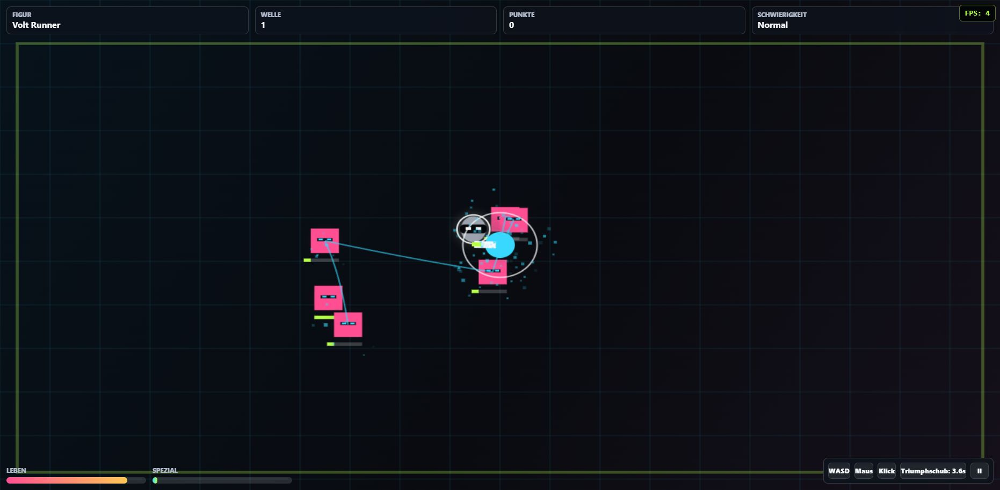

Unterschiedliche Helden
Jede Figur besitzt eigene Werte, Spielgefühl und Spezialfähigkeiten. Finde den Stil, der zu deiner Strategie passt.
Kostenlos im Browser spielbar
Wähle deinen Helden, überstehe immer stärkere Roboterwellen und kombiniere Bewegung, Schüsse und Spezialfähigkeiten. Allein oder gemeinsam im Koop-Modus.
Keine Installation erforderlich · PC und Mobilgerät

Das Spiel
Neon Bot Arena ist ein eigenständiges Actionspiel für den Webbrowser. In jeder Runde erscheinen neue Gegnerwellen. Münzen aus erfolgreichen Läufen schalten zusätzliche Helden, Verbesserungen und Begleiter frei. Unterschiedliche Schwierigkeitsgrade verändern Gegnerstärke und Belohnungen.
Funktionen
Jede Figur besitzt eigene Werte, Spielgefühl und Spezialfähigkeiten. Finde den Stil, der zu deiner Strategie passt.
Erstelle eine Lobby, teile den vierstelligen Code und kämpfe gemeinsam gegen die Arena.
Mehrstufige Bosskämpfe bringen neue Angriffe, steigende Schwierigkeit und besondere Belohnungen.
Fortschritt, Münzen und Einstellungen bleiben lokal auf deinem Gerät gespeichert.
Spielmodi
Starte sofort eine Einzelrunde oder verbinde dich über einen Lobbycode mit einem zweiten Spieler. Bestimmte Herausforderungen erlauben zusätzliche Mitspieler und verändern die Stärke der Gegner passend zur Gruppe.
Bereit?
Neon Bot Arena läuft direkt in einem modernen Browser. Wähle eine Figur und starte deine erste Runde.
Jetzt kostenlos spielen